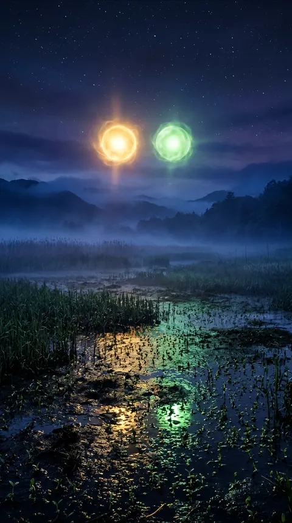

角杙神・活杙神古事記の神々 其の九
古事記で10番目と11番目に登場する神さま「角杙神（つのぐいのかみ）」と「活杙神（いくぐいのかみ）」。
まず知りたい疑問：名前の「くい」とは？
古事記と、名前の意味
- 神世七代の四代目の、男神と女神のペアです。
- 名前の「くい」は、地面に打ち込む「杭」だという説があります。湿地を固める杭、村を災いから守る境の杭、神が降りてくる目印の杭など、どの杭かにも説がいくつもあります。
- 一方で「つの」は草の芽立ちのことで、命が芽吹く力を表すという説も。泥と砂の神の次に現れ、神の形が生まれ始めたことを表すともいわれます。
よくある疑問
名前の「くい」とは？
地面に打ち込む「杭」だという説があります。湿地を固める杭、村を守る境の杭、神が降りてくる目印の杭など、どの杭かにも説がいくつもあります。
「つの」の意味は？
草の芽立ちのことで、命が芽吹く力を表すという説があります。
同じ場面の神さま（神世七代）

イメージ画
1分で見る
出典と画像
参考：國學院大學「古事記ビューアー」
画像はすべてイメージです。
動画のナレーション：VOICEVOX:青山龍星